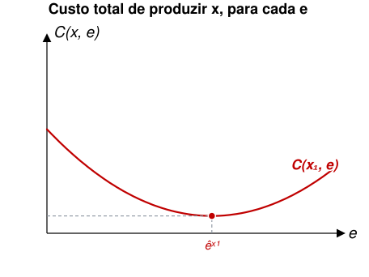
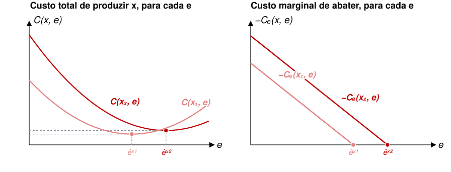
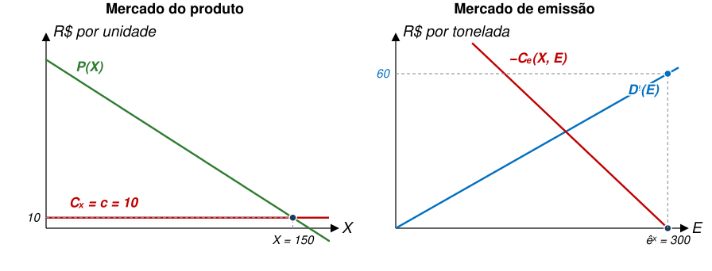
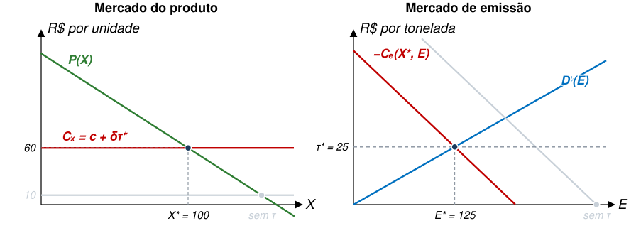
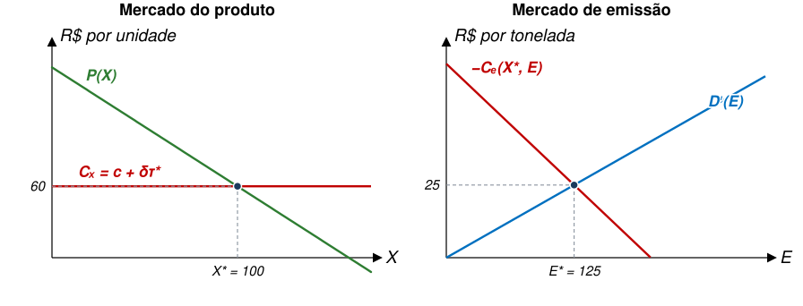
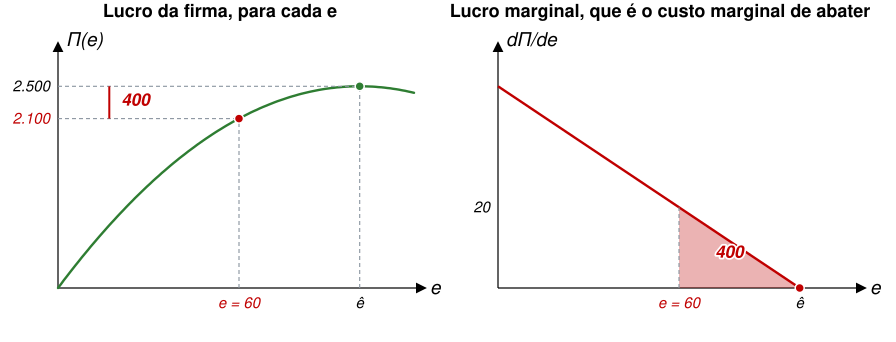
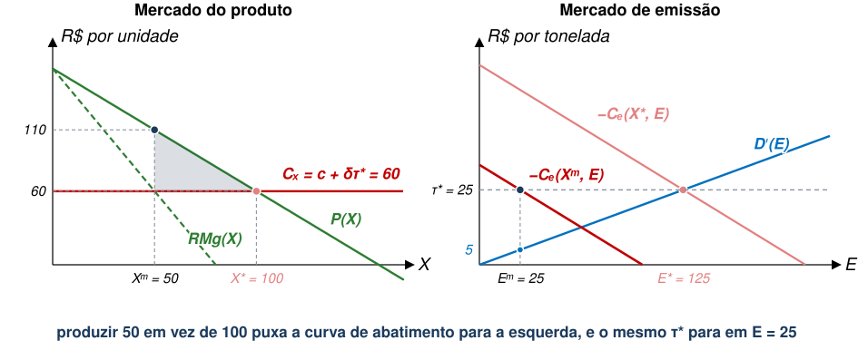
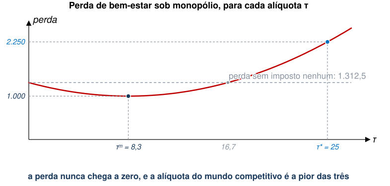
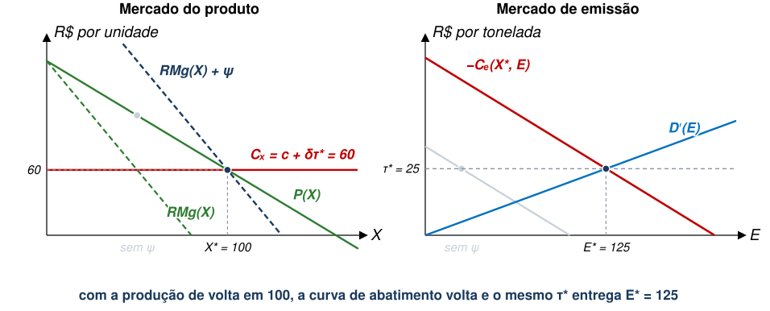
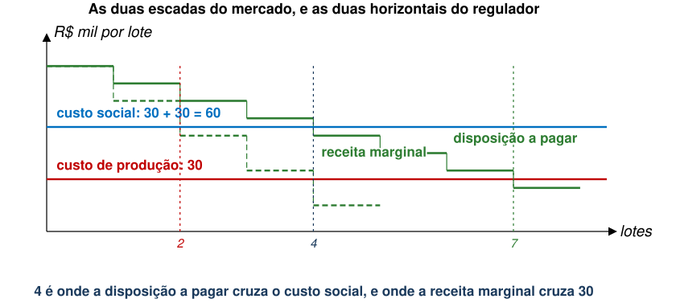

EAE1317 — Economia do Meio Ambiente e dos Recursos Naturais
2026-09-17
Uma indústria poluidora tem um único produtor. O regulador cobra dele um imposto igual ao dano marginal, que é a alíquota eficiente quando o mercado é competitivo.
(a) O bem-estar sobe: o imposto corrige a externalidade, e isso vale em qualquer mercado.
(b) O bem-estar sobe, mas menos do que sob concorrência, porque o monopolista repassa parte da conta ao preço.
(c) O bem-estar pode cair: o monopolista já produzia de menos, e o imposto o faz produzir menos ainda.
Referência: Phaneuf e Requate, caps. 5 e 6
1. Uma escolha a firma decide quanto emitir, e a produção fica fora do modelo.
2. Duas escolhas a firma decide quanto produzir e quanto emitir, e o custo liga as duas.
3. Mercado competitivo o preço é dado, e um instrumento basta.
4. Mercado monopolista o vendedor escolhe o preço, e um instrumento não basta.
\[x=f({\ell }_{1},...,{\ell }_{K})\]
\[e=g({\ell }_{1},...,{\ell }_{K})\]
\[C\left(x,e\right)=\min_{({\ell }_{1},...,{\ell }_{K})} \left\{\sum_{k=1}^{K} {w}_{k}{\ell }_{k}+\lambda [x-f({\ell }_{1},...,{\ell }_{K})+\mu [e-g({\ell }_{1},...,{\ell }_{K})\right\}\]
Em que \(({w}_{1},...,{w}_{K})\) é o vetor de preços dos insumos (fatores de produção).
\[{C}_{e}\left(x,{ê}^{x}\right)=\frac{\partial C\left(x,{ê}^{x}\right)}{\partial e}=0\]
Sobre o custo marginal de abatimento, \(-{C}_{e}(x,e)\), temos que:
Além disso, temos:


Assuma a seguinte função-utilidade quase-linear:
\[{U}^{i}={u}_{i}\left({x}_{i}\right)+{z}_{i}-{D}_{i}\left(E\right)\]
A restrição orçamentária do consumidor é dada por:
\[{y}_{i}=p{x}_{i}+{z}_{i}\]
O consumidor maximiza utilidade sujeito à restrição orçamentária.
Podemos definir a função de demanda inversa individual (disposição marginal a pagar) usando a CPO:
\[{p}_{i}\left({x}_{i}\right)={u}_{i}^{′}({x}_{i})\]
O benefício de se consumir \({x}_{i}\) unidades é dado por:
\[\int_{0}^{{x}_{i}} {p}_{i}\left(t\right)dt={u}_{i}({x}_{i})\]
Para agregar o benefício de se consumir \(x\) entre os consumidores, defina:
\[X=\sum_{i=1}^{I} {x}_{i}\]
A demanda inversa agregada é dada pela soma horizontal das demandas individuais.
Com isso, temos danos e benefícios associados à poluição:
O bem-estar social gerado por \(x\), neste caso, é dado por:
\[W\left({x}_{1},...,{x}_{J},{e}_{1},...,{e}_{J}\right) = \int_{0}^{\sum {x}_{j}} P\left(t\right)dt - \sum_{j=1}^{J} {C}^{j}\left({x}_{j},{e}_{j}\right) - D(E)\]
Os três termos são benefício total aos consumidores, custo total das firmas e dano causado pela poluição. O problema do regulador é:
\[\underset{\begin{array}{l}{x}_{1},...,{x}_{J} \\ {e}_{1},...,{e}_{J}\end{array}}{\max_{}} W({x}_{1},...,{x}_{J},{e}_{1},...,{e}_{J})\]
O bem-estar social gerado por \(x\), neste caso, é dado por:
\[W\left({x}_{1},...,{x}_{J},{e}_{1},...,{e}_{J}\right) = \int_{0}^{\sum {x}_{j}} P\left(t\right)dt - \sum_{j=1}^{J} {C}^{j}\left({x}_{j},{e}_{j}\right) - D(E)\]
Quais são as condições de primeira ordem?
\[P\left(X\right)={C}_{{x}_{j}}^{j}\left({x}_{j},{e}_{j}\right) \forall j\]
\[{D}^{′}\left(E\right)=-{C}_{{e}_{j}}^{j}\left({x}_{j},{e}_{j}\right) \forall j\]
São duas condições, e nenhuma delas é nova. A novidade é considerá-las ao mesmo tempo.



A pergunta a guardar é quantos instrumentos o regulador precisa para atender às duas condições do ótimo.
No equilíbrio competitivo, temos firmas maximizando lucro, dado pela função abaixo:
\[{Π}_{j}\left({x}_{j},{e}_{j}\right)=p{x}_{j}-{C}^{j}\left({x}_{j},{e}_{j}\right)-\tau {e}_{j}\]
Como de costume, a escolha ótima é revelada pelas CPOs:
\[p={C}_{{x}_{j}}^{j}\left({x}_{j}, {e}_{j}\right) \qquad \tau =-{C}_{{e}_{j}}^{j}({x}_{j},{e}_{j})\]
Se o regulador tem informação plena, pode tentar implementar um imposto \(\tau ={D}^{′}({E}^{*})\) e alcançar o ótimo de Pareto.
O governo emite \(L\) permissões, de modo que temos:
\[{Π}_{j}\left({x}_{j},{e}_{j}\right)=p{x}_{j}-{C}^{j}\left({x}_{j},{e}_{j}\right)-\sigma (L){e}_{j}\]
E CPOs:
\[p={C}_{{x}_{j}}^{j}\left({x}_{j}, {e}_{j}\right) \qquad \sigma (L)=-{C}_{{e}_{j}}^{j}({x}_{j},{e}_{j})\]
Se \(L={E}^{*}\), teremos o ótimo de Pareto.
Em alguns contextos, firmas não conseguem abater poluição com tecnologia específica para isso.
Formalmente, teríamos uma função \(C(x)\) com \({C}^{′}\left(x\right)>0\) e \({C}^{′′}\left(x\right)\geq 0\).
Além disso, emissões seriam função direta da produção.
Se a redução de poluição afeta diretamente a produção, o custo de abatimento é a perda de lucro da firma.
Com \(e=\delta x \to x=\frac{e}{\delta }\), o lucro da firma é dado por:
\[Π=px-C\left(x\right)=\frac{p.e}{\delta }-C\left(\frac{e}{\delta }\right)\]
Sabemos que \(\hat{e}\) resolve a seguinte expressão:
\[\frac{dΠ}{de}=\left[p-{C}^{′}\left(\frac{\hat{e}}{\delta }\right)\right]\frac{1}{\delta }=0\]
O que acontece quando \(e<\hat{e}\)?

1. Uma escolha a firma decide quanto emitir, e a produção fica fora do modelo.
2. Duas escolhas a firma decide quanto produzir e quanto emitir, e o custo liga as duas.
3. Mercado competitivo o preço é dado, e um instrumento basta.
4. Mercado monopolista o vendedor escolhe o preço, e um instrumento não basta.
\[\max_{X,E} Π\left(X,E\right)=P\left(X\right)X-C\left(X,E\right)-\tau E\]
\[{P}^{′}\left({X}^{m}\right){X}^{m}+P\left({X}^{m}\right)={C}_{X}\left({X}^{m},{E}^{m}\right)\]
\[-{C}_{E}({X}^{m},{E}^{m})=\tau\]
A segunda CPO é idêntica à da firma competitiva.
\[\max_{X,E} W\left(X,E\right) = \int_{0}^{X} P\left(t\right)dt-C\left(X,E\right)-D\left(E\right)\]
CPOs:
\[P\left({X}^{*}\right)={C}_{X}\left({X}^{*},{E}^{*}\right) \qquad {D}^{′}\left(E\right)=-{C}_{E}\left({X}^{*},{E}^{*}\right)\]
São as mesmas duas condições do caso competitivo. O regulador quer \(P(X)\), e o monopolista entrega \({P}^{′}(X)X+P(X)\).

É possível alcançar a solução ótima \(({X}^{*},{E}^{*})\) apenas com um imposto \(\tau\)?
Regulador define \(\tau\) para maximizar
\[\max_{\tau} W\left[{X}^{m}\left(\tau \right),{E}^{m}\left(\tau \right)\right]\]
\[= \int_{0}^{{X}^{m}(\tau )} P\left(t\right)dt-C\left[{X}^{m}\left(\tau \right),{E}^{m}\left(\tau \right)\right]-D\left({E}^{m}\left(\tau \right)\right)\]
Note que o regulador tem um instrumento e duas margens a corrigir.
\[{\tau }^{m}={D}^{′}\left({E}^{m}\right)+{P}^{′}\left({X}^{m}\right){X}^{m}\frac{\frac{\partial {X}^{m}}{\partial \tau }}{\frac{\partial {E}^{m}}{\partial \tau }} \neq {D}^{′}\left({E}^{*}\right)={\tau }^{*}\]
Lembrando que \({P}^{′}\left(X\right)<0\), note que:
\[{\tau }^{m}={D}^{′}\left({E}^{m}\right)+{P}^{′}\left({X}^{m}\right){X}^{m}\frac{\frac{\partial {X}^{m}}{\partial \tau }}{\frac{\partial {E}^{m}}{\partial \tau }}\]

\[\max_{X,E} Π\left(X,E\right)=\left[P\left(X\right)+\psi \right]X-C\left(X,E\right)-\tau E\]
Cujas CPOs são:
\[{P}^{′}\left({X}^{m}\right){X}^{m}+P\left({X}^{m}\right)+\psi ={C}_{X}\left({X}^{m},{E}^{m}\right)\]
\[-{C}_{E}({X}^{m},{E}^{m})=\tau\]
\[P\left(X\right)+{P}^{′}\left(X\right)X-{P}^{′}\left({X}^{*}\right){X}^{*}={C}_{X}\left(X,E\right)\]
\[-{C}_{E}\left(X,E\right)={D}^{′}({E}^{*})\]
Duas falhas de mercado, dois instrumentos: \(\tau\) cuida da externalidade e \(\psi\) cuida do poder de mercado.

Uma única fábrica vende lotes de um produto. Cada lote emite 2 t, e cada tonelada causa R$ 15 mil de dano. Produzir um lote custa R$ 30 mil.
| lote | 1º | 2º | 3º | 4º | 5º | 6º | 7º |
|---|---|---|---|---|---|---|---|
| Disposição a pagar | 95 | 85 | 75 | 65 | 55 | 45 | 35 |
| Receita marginal | 95 | 75 | 55 | 35 | 15 |

| Lotes | Emissão | Bem-estar | |
|---|---|---|---|
| Eficiente | 4 | 8 t | 80 |
| Concorrência sem política | 7 | 14 t | 35 |
| Monopólio sem política | 4 | 8 t | 80 |
| Monopólio com \(\tau =30\) | 2 | 4 t | 60 |
| Monopólio com \(\tau =30\) e \(\psi =40\) | 4 | 8 t | 80 |
Imposto de poluição em mercado com apenas um produtor.
A resposta é (c): o bem-estar pode cair, como vimos.
O monopolista já restringe a produção, e restringir produção é abater. O imposto induz produção ainda menor.
Quanto menos elástica a demanda, maior a distorção que o imposto agrava.
Isso não quer dizer que se deva deixar o monopolista em paz, mas, sim, que a alíquota correta é menor do que no mercado competitivo.
EAE1317 — Economia do Meio Ambiente e dos Recursos Naturais